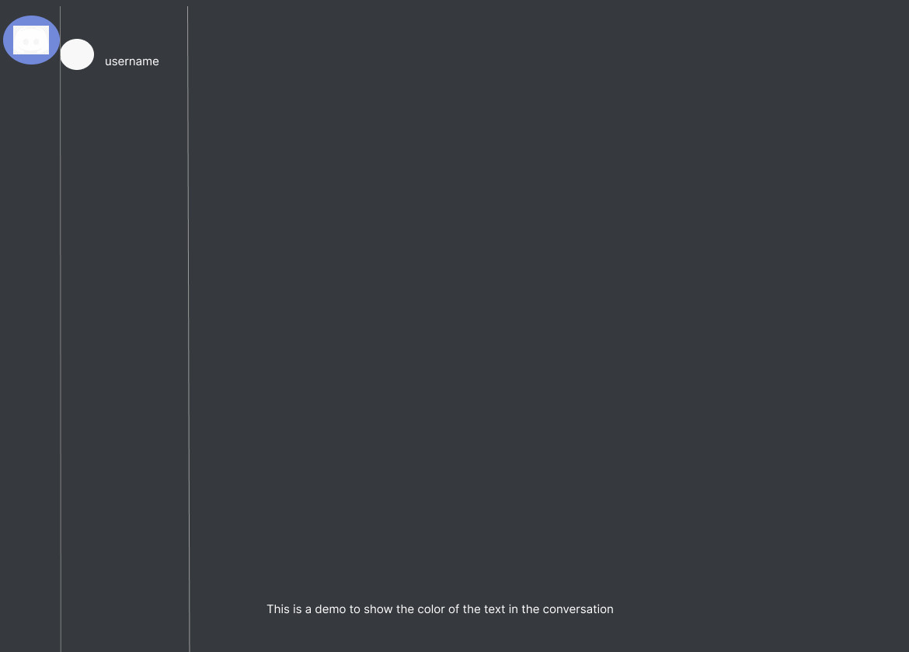
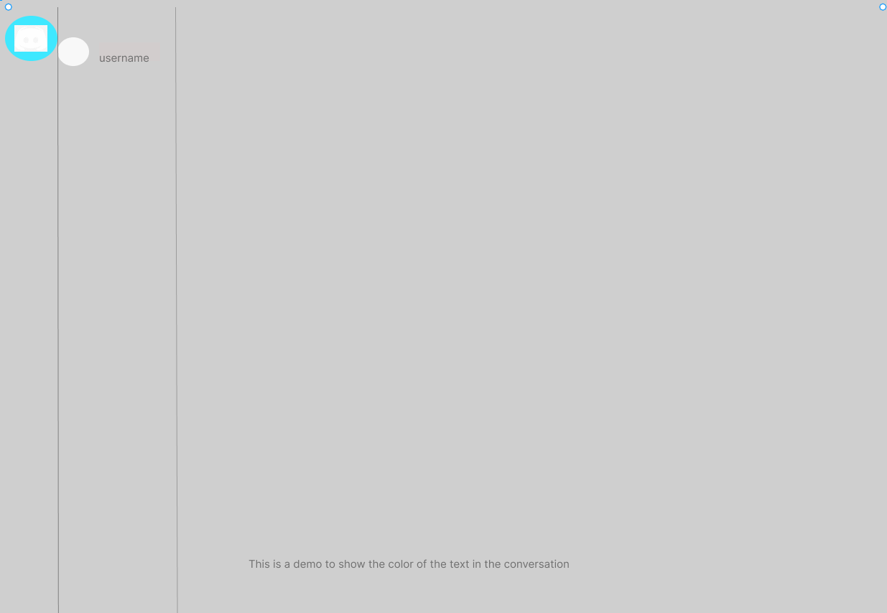
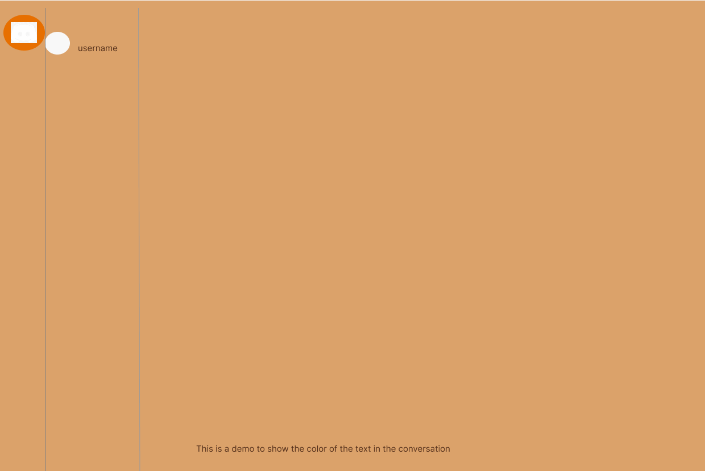
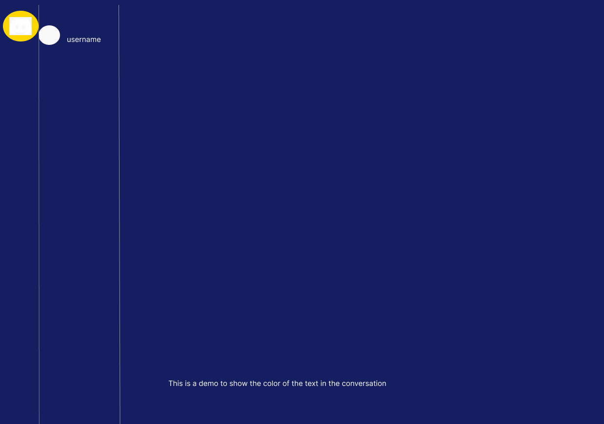

Original UI: Discord

Original Color Scheme:
Dominant color is Dark gray/black,
Secondary color is Blue/purple, and
White is used for text
Analysis:
Discord uses a monochromatic scheme for its base (various shades of dark gray and black). The unique "Blurple (blue & purple)" acts as a highlight and secondary color.
Mood & Personality: The dark theme suggests sophistication and is often preferred for its reduced eye strain, making it ideal for long hours of gaming or chatting. The "Blurple" adds a touch of playfulness and identity to the app.
Designers' Intentions is to provide an interface that's easy on the eyes, especially during long sessions. The bright accent colors guide users to important features and notifications.
Discod OG recreation

Dominant color: Dark gray to almost black
Secondary color: A unique blend of blue and purple, often called "Blurple"
Additional colors: White
Version 1 of the recreation:

Dominant color: Light gray
Secondary color: Sky blue
Additional colors: Dark gray text
Analysis: This version is breezier, more casual, and might appeal to a non-gaming demographic. It feels more like a standard chat application.
Version 2 of the recreation:

Dominant color: Sepia-tinted off-white
Secondary color: Burnt orange
Additional colors: Dark brown text
Analysis: This color scheme exudes nostalgia and would resonate with users who have a liking for vintage aesthetics.
Version 3 of the recreation:

Dominant color: Deep navy blue
Secondary color: Gold
Additional colors: White text,
Analysis: The navy and gold palette evoke a sense of professionalism and luxury. It's reminiscent of modern corporate tools or luxury brands.
Most Effective Color Scheme:
While each color scheme serves different purposes, the original Discord color scheme is highly effective for its intended audience - gamers and communities. It offers clarity, reduces eye strain, and the playful "Blurple" ensures the brand stands out.
Blog Post: Discord Interface
Every digital platform speaks to its users, not just through its content, but through its color. Discord, a sanctuary for gamers and communities, is no exception. Its iconic dark theme, highlighted by the unique "Blurple," has set it apart in the digital realm.
Discord's original color palette is a masterclass in combining functionality with brand identity. The dark background ensures hours of uninterrupted and strain-free chats, while the "Blurple" accent adds a dash of fun and recognition.
Version 1: Switching to a lighter palette with sky blue accents, this version feels casual and fresh. It's a relaxed take on the intense gaming sessions Discord is known for.
Version 2: With sepia tones and burnt orange accents, this version transports users to a bygone era. It's a nostalgic twist to the modern chat platform.
Version 3: The deep navy combined with gold elevates Discord to a corporate, professional level. It's luxury, but with a hint of digital edge.
Discord's original color scheme perfectly serves its primary audience. However, reimagining it with different palettes underscores the transformative power of color in user interface design. As designers, it's a reminder of the myriad emotions and reactions a simple color change can elicit.